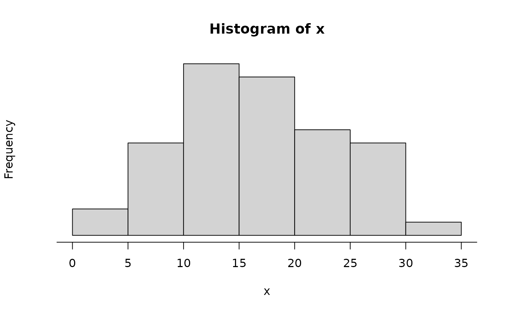
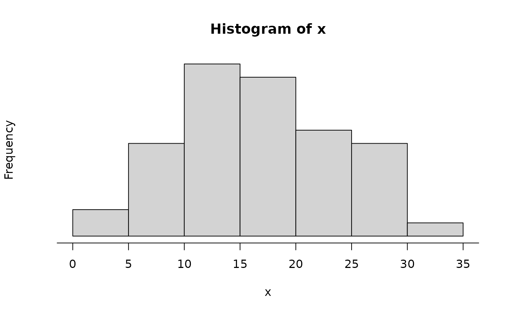

The function buildAxis is built to provide more control of the number
of labels on the axis. This function is still under development.
buildAxis(side, limits, n, nMin = 2, nMax = 10, extend = 2, eps = 10^-12, ...)Arguments
- side
The side of the plot where to add the axis.
- limits
Either lower and upper limits on the axis or a data set.
- n
The preferred number of axis labels.
- nMin
The minimum number of axis labels.
- nMax
The maximum number of axis labels.
- extend
How far the axis may extend beyond
range(limits).- eps
The smallest increment allowed.
- ...
Arguments passed to
axis
Value
A vector of the axis plotted.
Details
The primary reason behind building this function was to allow a plot to be
created with similar features but with different data sets. For instance, if
a set of code was written for one data set and the function axis had
been utilized with pre-specified values, the axis may not match the plot of
a new set of data. The function buildAxis addresses this problem by
allowing the number of axis labels to be specified and controlled.
The axis is built by assigning penalties to a variety of potential axis setups, ranking them based on these penalties and then selecting the axis with the best score.
See also
Author
David Diez
Examples
#===> 0 <===#
limits <- rnorm(100, 605490, 10)
hist(limits, axes=FALSE)
buildAxis(1, limits, 2, nMax=4)
#===> 1 <===#
x <- seq(0, 500, 10)
y <- 8*x+rnorm(length(x), mean=6000, sd=200)
plot(x, y, axes=FALSE)
buildAxis(1, limits=x, n=5)
buildAxis(2, limits=y, n=3)
#===> 2 <===#
x <- 9528412 + seq(0, 200, 10)
y <- 8*x+rnorm(length(x), mean=6000, sd=200)
plot(x, y, axes=FALSE)
temp <- buildAxis(1, limits=x, n=4)
buildAxis(2, y, 3)
 #===> 3 <===#
x <- seq(367, 1251, 10)
y <- 7.5*x+rnorm(length(x), mean=6000, sd=800)
plot(x, y, axes=FALSE)
buildAxis(1, limits=x, n=4, nMin=3, nMax=3)
buildAxis(2, limits=y, n=4, nMin=3, nMax=5)
#===> 3 <===#
x <- seq(367, 1251, 10)
y <- 7.5*x+rnorm(length(x), mean=6000, sd=800)
plot(x, y, axes=FALSE)
buildAxis(1, limits=x, n=4, nMin=3, nMax=3)
buildAxis(2, limits=y, n=4, nMin=3, nMax=5)
 #===> 4 <===#
x <- seq(367, 367.1, 0.001)
y <- 7.5*x+rnorm(length(x), mean=6000, sd=0.01)
plot(x, y, axes=FALSE)
buildAxis(1, limits=x, n=4, nMin=5, nMax=6)
buildAxis(2, limits=y, n=2, nMin=3, nMax=4)
#===> 4 <===#
x <- seq(367, 367.1, 0.001)
y <- 7.5*x+rnorm(length(x), mean=6000, sd=0.01)
plot(x, y, axes=FALSE)
buildAxis(1, limits=x, n=4, nMin=5, nMax=6)
buildAxis(2, limits=y, n=2, nMin=3, nMax=4)
 #===> 5 <===#
x <- seq(-0.05, -0.003, 0.0001)
y <- 50 + 20*x + rnorm(length(x), sd=0.1)
plot(x, y, axes=FALSE)
buildAxis(1, limits=x, n=4, nMin=5, nMax=6)
buildAxis(2, limits=y, n=4, nMax=5)
abline(lm(y ~ x))
#===> 6 <===#
x <- seq(-0.0097, -0.008, 0.0001)
y <- 50 + 20*x + rnorm(length(x), sd=0.1)
plot(x, y, axes=FALSE)
buildAxis(1, limits=x, n=4, nMin=2, nMax=5)
buildAxis(2, limits=y, n=4, nMax=5)
abline(lm(y ~ x))
#===> 7 <===#
x <- seq(0.03, -0.003099, -0.00001)
y <- 50 + 20*x + rnorm(length(x), sd=0.1)
plot(x, y, axes=FALSE)
buildAxis(1, limits=x, n=4, nMin=2, nMax=5)
buildAxis(2, limits=y, n=4, nMax=6)
abline(lm(y ~ x))
#===> 5 <===#
x <- seq(-0.05, -0.003, 0.0001)
y <- 50 + 20*x + rnorm(length(x), sd=0.1)
plot(x, y, axes=FALSE)
buildAxis(1, limits=x, n=4, nMin=5, nMax=6)
buildAxis(2, limits=y, n=4, nMax=5)
abline(lm(y ~ x))
#===> 6 <===#
x <- seq(-0.0097, -0.008, 0.0001)
y <- 50 + 20*x + rnorm(length(x), sd=0.1)
plot(x, y, axes=FALSE)
buildAxis(1, limits=x, n=4, nMin=2, nMax=5)
buildAxis(2, limits=y, n=4, nMax=5)
abline(lm(y ~ x))
#===> 7 <===#
x <- seq(0.03, -0.003099, -0.00001)
y <- 50 + 20*x + rnorm(length(x), sd=0.1)
plot(x, y, axes=FALSE)
buildAxis(1, limits=x, n=4, nMin=2, nMax=5)
buildAxis(2, limits=y, n=4, nMax=6)
abline(lm(y ~ x))
 #===> 8 - repeat <===#
m <- runif(1)/runif(1) +
rgamma(1, runif(1)/runif(1), runif(1)/runif(1))
s <- rgamma(1, runif(1)/runif(1), runif(1)/runif(1))
x <- rnorm(50, m, s)
hist(x, axes=FALSE)
buildAxis(1, limits=x, n=5, nMin=4, nMax=6, eps=10^-12)

if(diff(range(x)) < 10^-12){
cat("too small\n")
}
#===> 8 - repeat <===#
m <- runif(1)/runif(1) +
rgamma(1, runif(1)/runif(1), runif(1)/runif(1))
s <- rgamma(1, runif(1)/runif(1), runif(1)/runif(1))
x <- rnorm(50, m, s)
hist(x, axes=FALSE)
buildAxis(1, limits=x, n=5, nMin=4, nMax=6, eps=10^-12)

if(diff(range(x)) < 10^-12){
cat("too small\n")
}